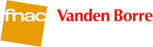
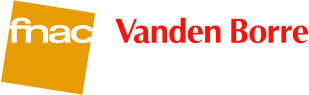
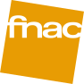

 2 enseignes, 1 groupe solide
La Fnac et Vanden Borre appartiennent au groupe français Fnac Darty depuis juillet 2016. En Belgique, les enseignes ont décidé d’unir leurs forces en coulisses sous le nom de Fnac Vanden Borre. Ce fut le début d’un nouveau chapitre au sein d’un groupe dynamique en pleine croissance. Les 2 marques restent actives sur le marché belge en raison de leur individualité.
Fnac
Libérez votre curiosité
Quelle est « the place to be » pour découvrir des livres, CD, DVD, logiciels et appareils électroniques ? La Fnac bien sûr. C’est en 1981 que nous avons ouvert notre tout premier magasin en Belgique. Depuis lors, notre équipe se donne passionnément pour présenter les dernières tendances en matière de technologie et des tas de produits pour inspirer les clients. Prêt(e) à partager votre passion avec nos clients et réveiller leur curiosité ? Alors nous sommes sur la même longueur d’onde !
Vanden Borre
Grandissons ensemble en toute confiance
Vanden Borre est leader sur le marché belge depuis des décennies. Que ce soit pour de l’audio, une TV, du multimédia ou un appareil électro, les clients savent que chez nous, ils recevront le meilleur service. Travailler pour un employeur stable qui vous permet d’évoluer dans votre carrière, ça vous tente ? Nous vous aidons à trouver le job idéal.